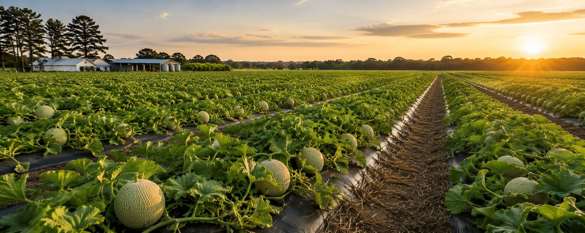
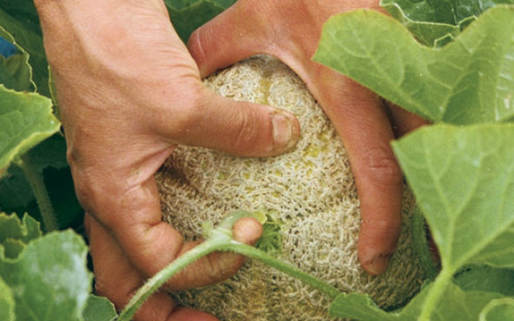
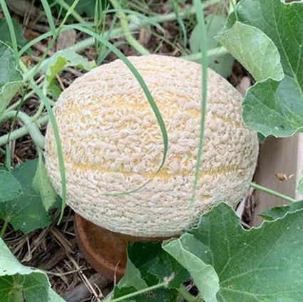
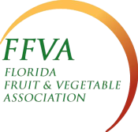

Harvesting a cantaloupe at the right time is one of the most important steps in producing sweet, flavorful fruit. Unlike some fruits that continue to ripen significantly after picking, cantaloupes develop their best flavor, aroma, and sweetness while still on the vine. Farmers carefully monitor several signs to determine the perfect harvest window, ensuring consumers enjoy the highest quality fruit possible.
At Berry Boss Farm, harvesting at peak ripeness is essential to delivering fresh, delicious cantaloupes that meet our quality standards.
A cantaloupe harvested too early may lack sweetness, aroma, and proper texture. On the other hand, a fruit left on the vine for too long can become overly soft, reducing its shelf life and making it more susceptible to damage during transportation.
The goal is to harvest when the cantaloupe has reached its peak maturity, providing the ideal balance of sweetness, firmness, and freshness.

One of the easiest indicators of ripeness is a change in the fruit's background color.
Young cantaloupes typically have a greenish rind beneath their netted surface. As the fruit matures, this background color gradually changes to a creamy yellow or golden tan.
A ripe cantaloupe will usually display:
This color transformation signals that the fruit is nearing harvest readiness.
Experienced farmers often use what is known as the "slip stage" to determine ripeness.
The slip stage refers to how easily the fruit separates from the vine.
At full ripeness, the cantaloupe naturally detaches from the stem with very little pressure. A circular crack forms around the stem attachment point, indicating the fruit is ready to harvest.
Some growers harvest at the half-slip stage, where the fruit begins loosening from the vine but has not completely separated. This allows for slightly longer storage and transportation while maintaining good flavor.
The slip stage is one of the most reliable indicators of cantaloupe maturity.

A ripe cantaloupe develops a sweet, fragrant aroma near the stem end.
Farmers often inspect fields by walking through rows and checking for:
If the fruit lacks aroma, it may need additional time on the vine.
The rough, web-like pattern on a cantaloupe's surface is known as netting.
As the fruit matures:
Well-developed netting often indicates the fruit has completed much of its growth and is approaching harvest.
Farmers also evaluate firmness to ensure fruit quality.
A ripe cantaloupe should:
Maintaining proper firmness helps preserve quality during handling and transportation.
Determining when a cantaloupe is ready to harvest requires experience, observation, and careful attention to detail. Farmers rely on several indicators, including color changes, the slip stage, aroma, netting development, and weather conditions.
These methods help ensure that every cantaloupe reaches consumers with the sweetness, texture, and quality that make this fruit a favorite summertime treat. Through proper harvest timing and careful handling, farms like Berry Boss continue to provide fresh, delicious produce that families can enjoy throughout the season.
